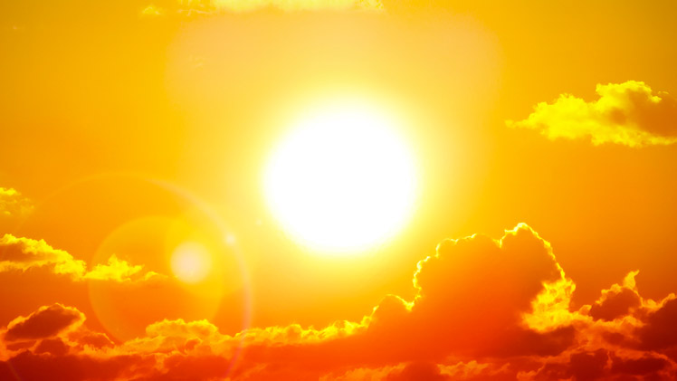
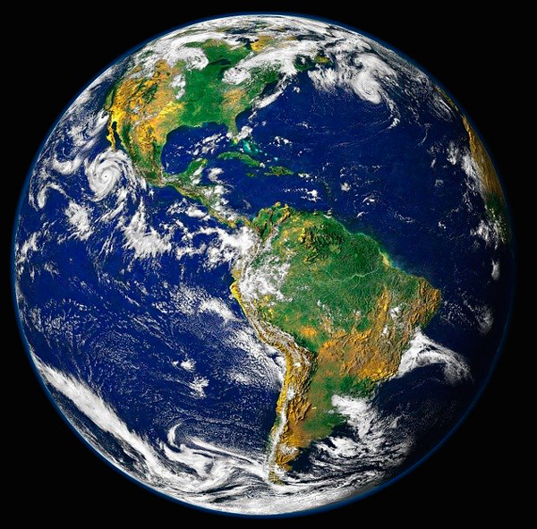

El Sistema Solar es un conjunto formado por Sol y los ocho planetas que giran a su alrededor. De los ocho planetas, uno es donde vivimos: la Tierra. Además de estos elementos hay otros cuerpos celestes que también orbitan alrededor de la gran estrella solar, como los satélites de cada planeta, los cometas o a los esteroides.
En el universo hay millones de galaxias. Una de ellas es la que conocemos como Vía Láctea. La Vía Láctea, formada por estrellas, polvo y gas, tiene forma de espiral. Podría decirse que su aspecto es algo así como un remolino con varios brazos; pues bien, en uno de ellos, el llamado brazo de Orión, se encuentra el Sistema Solar.
 Estos son los ocho planetas:
Estos son los ocho planetas:
El Sol es una estrella gigante que emite luz y calor. Sin él, no habría vida en la Tierra.
La Tierra es el único planeta habitado en el Sistema Solar. El 70% de su superficie está cubierta de agua.
